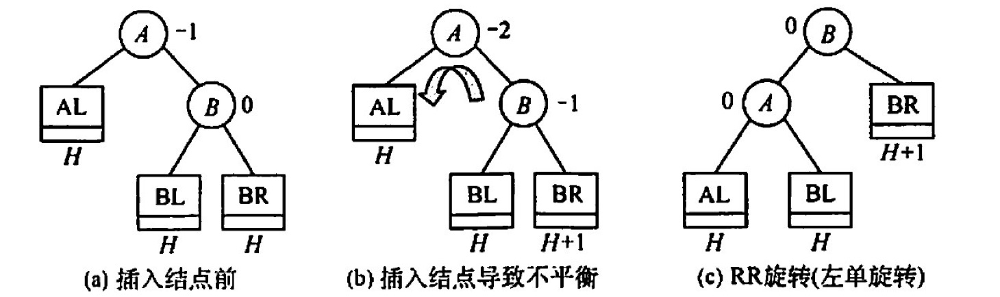
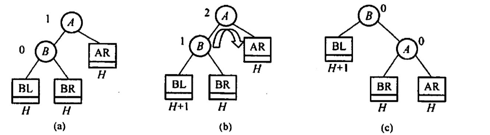
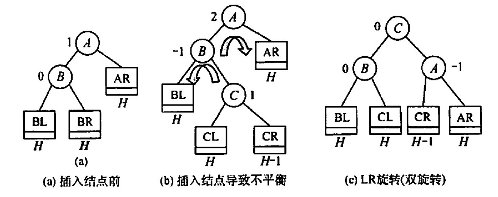
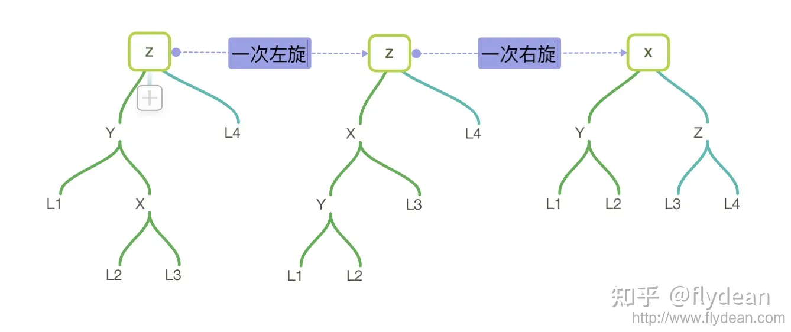
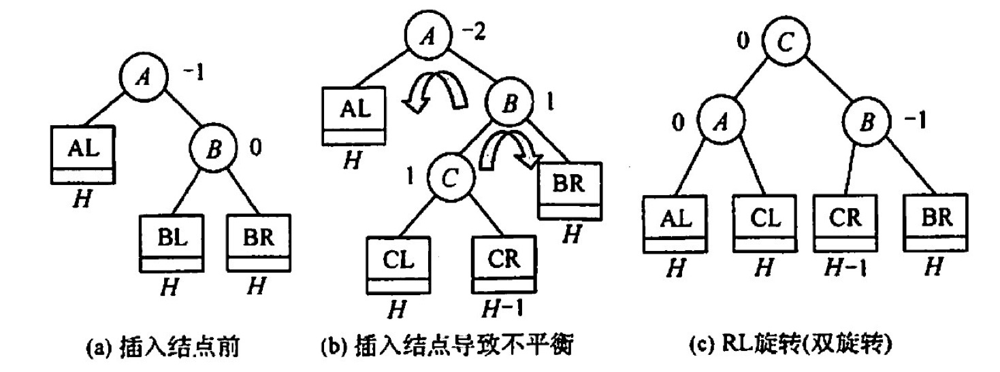
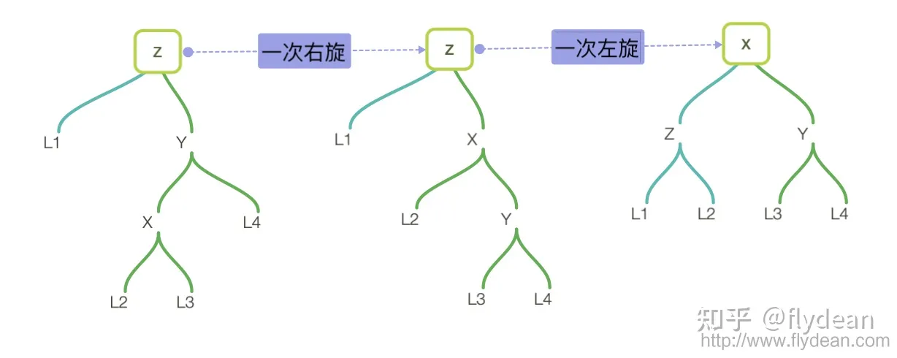
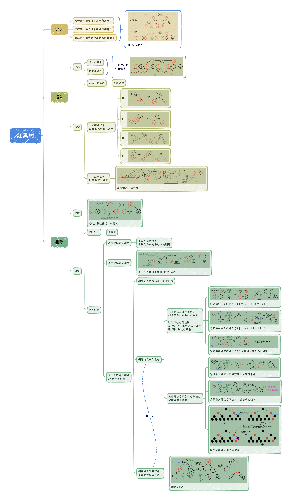

树型查找
2022.10.06
思想
二叉排序树(BST)
- BST的思想：左<根<右
- BST删除结点：如果某一边子树为空，就把另一边子树接上。如果两边子树都不是空，就找到右边的最左下或左边的最右下，放到删除的结点的位置。
平衡二叉树(AVL)
AVL树的思想：左右子树高度差<1
AVL树的插入：先插入，再调整。
左旋：RR


右旋：LL


先左后右：LR


先右后左：RL


AVL树的删除：删完了在进行上述的旋转
红黑树
⭕️ 知乎红黑树专题：https://www.zhihu.com/topic/19648609/hot
✨ 红黑树定义与插入：https://www.bilibili.com/video/BV1BB4y1X7u3/
红黑树的定义：
- 根结点：黑色
- 叶子结点：黑色
- 普通结点：红色或黑色
- 不存在两个相邻的红结点
- 每个节点，从该结点到任一叶结点的简单路径上，所含黑结点数量相同
- 新节点默认为红色
根叶黑，不红红，黑路同
概念与结论
{kind=link}

红黑树删除妙记：
每个人都有一颗心。有的人，心是红的；有的人，心是黑的。
红心的人善良，遇到事情自己扛。而黑心的人总想着利用别人，真是还要拉人下水！
让一个红心的人离开，她真的就兀自走开了。(直接删除红色叶子结点)
但当一个心黑的人离开，他一定要搞一些事情，而且还从身边的人下手！
一个心黑的人离开，他会对自己的唯一的孩子痛下杀手，让天真的孩子变成昔日的自己。（黑结点有一个红孩子，删除黑结点，红孩子染黑）
当这个心黑的人没有孩子，他就会对自己兄弟下手。可笑的事，不是一家人，不进一家门。心黑的人通常有个心黑的兄弟。黑心兄弟发现有人害自己，赶紧把自己的苦难转移给别人。（黑叶子结点+黑色兄弟的情况）
这个黑心的兄弟不仅残害自己的善良的孩子，还欺负自己年迈的父亲。黑心的兄弟谋朝篡位，自己当爷爷，让原来的爷爷和自己善良的孩子变得心黑（删除黑叶子，黑色兄弟有红孩子，LL和RR情况）。当然也有另一种可能，他善良的孩子由于耳濡目染，也学起了自己的父亲，并做了孙子当爷爷的勾当（删除黑叶子，黑色兄弟有红孩子，LR和RL情况）！
更有趣的是，当这个心黑的人和他黑心的兄弟都没有孩子时，这两个人便打起了他们老父亲的主意。当父亲是个善良的人时，可怜的父亲愿意背负起孩子的罪恶，替孩子赎罪。（删除黑叶子，黑色兄弟无红孩子，父结点为红色，父结点与兄弟结点交换颜色）
当黑心人与黑心兄弟赶上了黑心的父亲，这才是真的坏透了。然而物极必反，黑心兄弟良心发现！不过这仍阻止不了黑心人与黑心父亲惦记起了更年迈的曾爷爷😭。此时，黑心的爷爷仿佛成了上文的黑心人。（删除黑叶子，黑色兄弟无红孩子，父结点为黑色，兄弟结点变红，爷结点当成删除的结点进行递归）
有些人说，一个黑心人也可能没有黑心兄弟。确实，不过经实验表明，善良的兄弟会被黑心人同化，导致上述故事的重演。（删除黑叶子，红色兄弟，通过旋转+变色，转换为黑兄弟情况）
所以，屏幕前的你，请保持善良。否则，主的审判迅速降临。
实现
二叉排序树(BST)
xxxxxxxxxxBSTNode *BSTSearch(BSTree &_T,Element e,BSTree &father){ BSTNode *T = _T; father=NULL; while(T!=NULL && ele_get_weight(T->data)!= ele_get_weight(e)){ visit(T); if(ele_get_weight(e) < ele_get_weight(T->data)) {father=T;T=T->lchild;} else {father=T;T=T->rchild;} } return T;}
bool BSTInsert(BSTree &p,Element e){ BSTNode *q = p; if(q==NULL){ InitTree(p); SetTreeData(p,e); return true; } while(1){ visit(q); if(ele_get_weight(e)< ele_get_weight(q->data)) if(q->lchild == NULL) return InsertLeftTree(q,e); else q = q->lchild; else if(ele_get_weight(e)> ele_get_weight(q->data)) if(q->rchild == NULL) return InsertRightTree(q,e); else q = q->rchild; else return false; }}
bool BSTDelete1(BSTree &p,BSTree &father){ if(father->rchild==p) father->rchild=NULL; else father->lchild=NULL; free(p); return true;}
bool BSTDelete2(BSTree &p,BSTree &father){ BSTNode *q = NULL; if(p->rchild==NULL) q=p->lchild; else q=p->rchild; if(father->rchild==p) father->rchild=q; else father->lchild=q; free(p); return true;}
bool BSTDelete(BSTree &T, Element e){ BSTNode *father; BSTNode *p = BSTSearch(T,e,father); if(p==NULL) return false;
// 如果是叶子结点——直接删除 if(p->rchild==NULL&&p->lchild==NULL){ return BSTDelete1(p,father); }
// 如果左子树或右子树为空 if(p->rchild==NULL||p->lchild==NULL){ return BSTDelete2(p,father); }
// 左子树右子树都非空 - 找到左边的最右下或右边的最左下 BSTNode *q = p->rchild; // 本案例找到右边的最左下 if(q->rchild==NULL && q->lchild==NULL){ // 子树只有一层，自己就是最左下 ele_copy(p->data,q->data); return BSTDelete1(q,p); } BSTNode *qf = p; while(1){ // 找最左下并把结点复制到待删除结点位置 if(q->lchild==NULL){ ele_copy(p->data,q->data); break; }else{ qf=q; q=q->lchild; } } if(q->rchild==NULL) return BSTDelete1(q,qf); else{ ele_copy(q->data,q->rchild->data); return BSTDelete2(q,qf); }}运行结果展示
xxxxxxxxxx============================二叉排序树二叉排序树的构建Insert 19 :先序遍历 : 19Insert 13 :19先序遍历 : 19 13Insert 50 :19先序遍历 : 19 13 50Insert 11 :19 13先序遍历 : 19 13 11 50Insert 26 :19 50先序遍历 : 19 13 11 50 26Insert 66 :19 50先序遍历 : 19 13 11 50 26 66Insert 21 :19 50 26先序遍历 : 19 13 11 50 26 21 66Insert 30 :19 50 26先序遍历 : 19 13 11 50 26 21 30 66Insert 60 :19 50 66先序遍历 : 19 13 11 50 26 21 30 66 60Insert 70 :19 50 66先序遍历 : 19 13 11 50 26 21 30 66 60 70得到二叉排序树:A-19/ \B-13 C-50/ / \D-11 E-26 F-66/ \ / \G-21 H-30 I-60 J-70寻找值为n的结点60是否存在: 19 50 6671是否存在: 19 50 66 7026是否存在: 19 50插入结点插入71:19 50 66 70插入31:19 50 26 30A-19/ \B-13 C-50/ / \D-11 E-26 F-66/ \ / \G-21 H-30 I-60 J-70\ \K-31 L-71删除结点删除叶子结点 31 - 直接删除 - 19 50 26 30先序遍历 : 19 13 11 50 26 21 30 66 60 70 71中序遍历 : 11 13 19 21 26 30 50 60 66 70 71删除结点左或右子树为空 13 - 用子树替代自己 - 19先序遍历 : 19 11 50 26 21 30 66 60 70 71中序遍历 : 11 19 21 26 30 50 60 66 70 71删除结点左右子树非空 66 - 找右边最左下 - 19 50先序遍历 : 19 11 50 26 21 30 70 60 71中序遍历 : 11 19 21 26 30 50 60 70 71删除结点左右子树非空 26 - 用子树替代自己 - 19 50先序遍历 : 19 11 50 30 21 70 60 71中序遍历 : 11 19 21 30 50 60 70 71